renatovalente5.github.io/AMMA_CreativeEm desenvolvimento
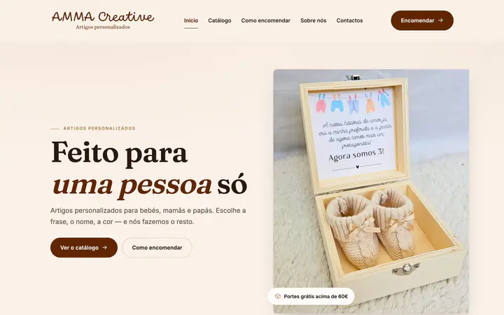
Artigos personalizados para bebé · Vila Nova de Anha, Viana do Castelo
Ver o site ↗
lrmotorsautomoveis.pt
Venda de automóveis usados · Vila Verde
Ver o site ↗
artstampcreations.pt
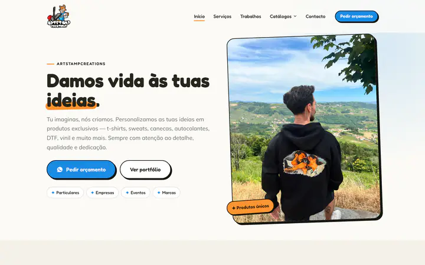
Personalização e estampagem · Vizela
Ver o site ↗
pauferroatelier.pt
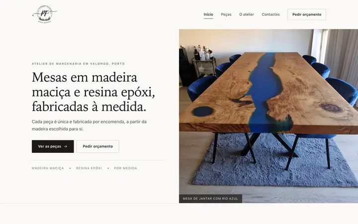
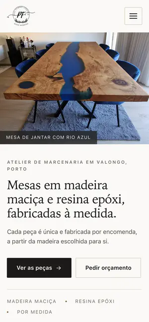
Marcenaria e resina epóxi · Valongo
Ver o site ↗
rafmatos.pt
Construção e remodelações · Vila Nova de Gaia
Ver o site ↗
renatovalente5.github.io/FeiraNorteAutoEm desenvolvimento
Oficina de reparação automóvel · Lourosa, Santa Maria da Feira
Ver o site ↗
goldcleaning.pt
Limpeza profissional · Rio Meão, Santa Maria da Feira
Ver o site ↗
hvlimpezas.pt
Limpeza técnica de fachadas · Mozelos, Santa Maria da Feira
Ver o site ↗
renatovalente5.github.io/NewAutoEm desenvolvimento
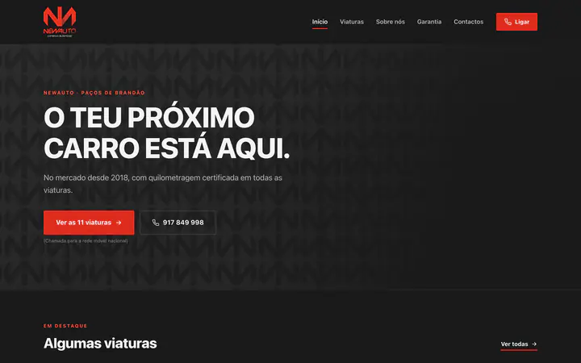
Comércio de automóveis usados · Paços de Brandão, Santa Maria da Feira
Ver o site ↗
weldstaff.pt
Outsourcing de soldadura · Arrifana, Santa Maria da Feira
Ver o site ↗
pokeauto.pt
Oficina auto multimarca · São João da Madeira
Ver o site ↗
armazemdospneus.pt
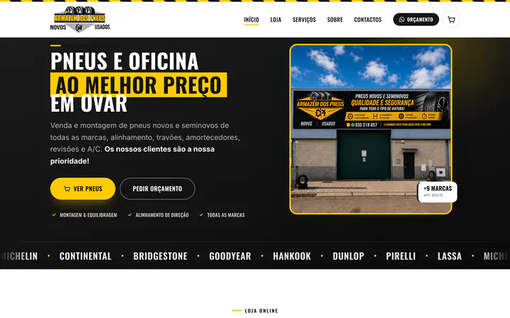
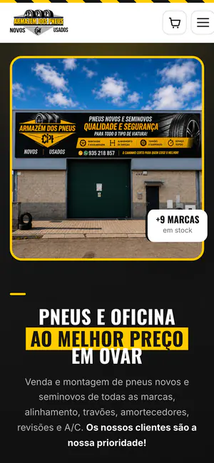
Pneus e oficina auto · Arada, Ovar
Loja online
Ver o site ↗
renatovalente5.github.io/MarmovarEm desenvolvimento
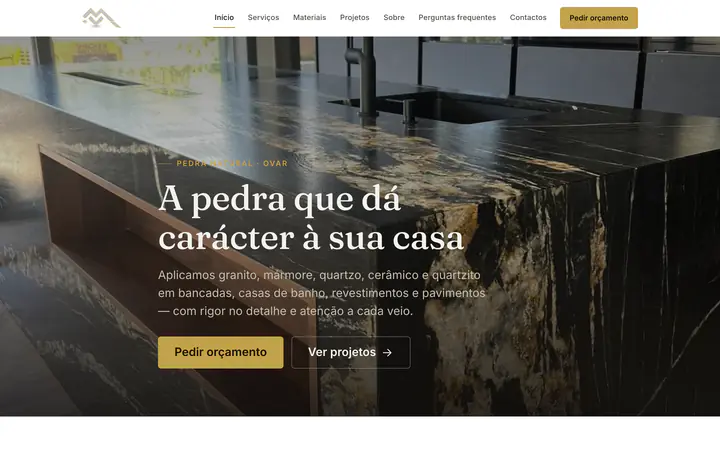
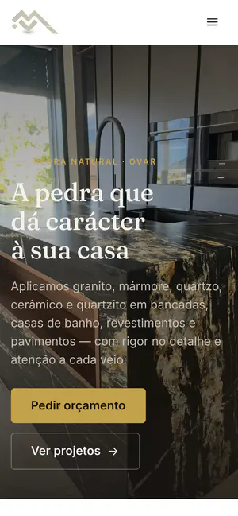
Aplicação de pedra natural · São João de Ovar, Ovar
Ver o site ↗
hntransportes.pt
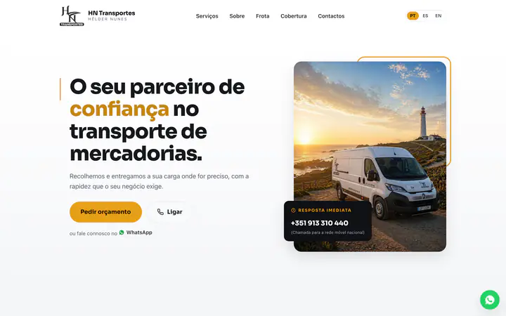
Transporte de mercadorias · Cesar, Oliveira de Azeméis
Ver o site ↗
renatovalente5.github.io/PerfectFinishEm desenvolvimento
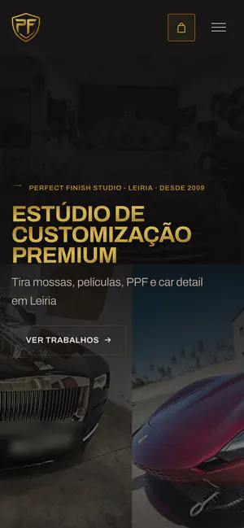
Customização automóvel · Leiria
Ver o site ↗
renatovalente5.github.io/SpaDoAutomovelLUXEm desenvolvimento
Estética automóvel · Portalegre
Ver o site ↗
renatovalente5.github.io/MentaConectaEm desenvolvimento
Personalização e gráfica · Lisboa
Ver o site ↗
praiometro.pt
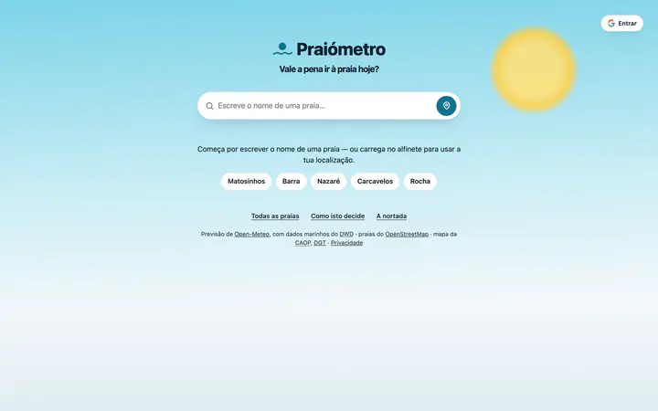
Previsão de praias · Todo o país
Ver o site ↗